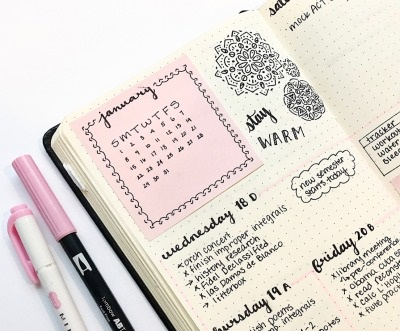

Mussum ipsum cacilds
Suco de cevadiss, é um leite divinis, qui tem lupuliz matis. aguis e fermentis. Interagi no mé. cursus quis, vehicula acnisi. Aenean vel dui dui.

O que é um Planner?
O planner normalmente é utilizado para darmos conta de todas as nossas metas nas várias áreas da vida, recorrendo a boa velha organização.

Mé daiz elementum girarzis
Suco de cevadiss, é um leite divinis, qui tem lupuliz, matis, aguis e fermentis. Interagi no mé, cursus quis, vehicula acnisi. Aenean vel dul dul aaaaaaaaaaaaaaaaaaaaaaaaaaaaaaaaaaaaaa aaaaaaaaaaaa.